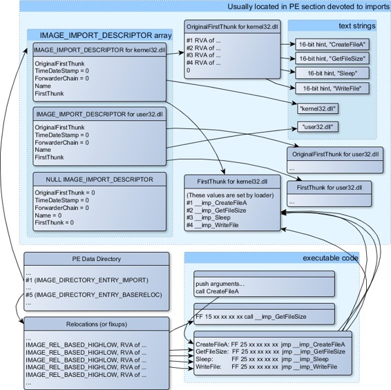
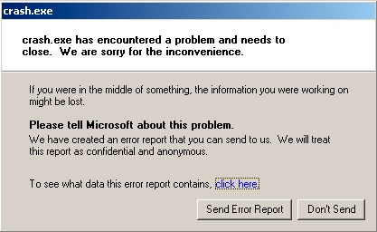
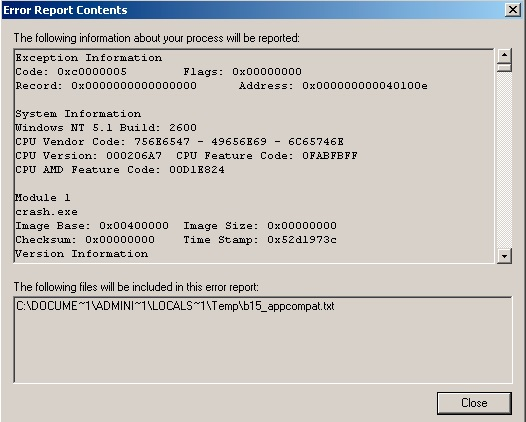
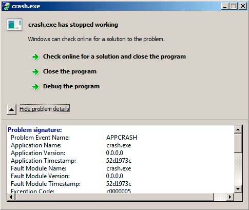
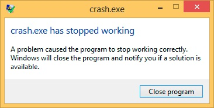
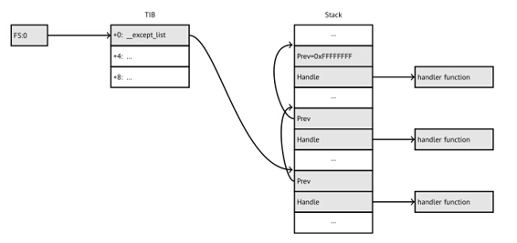
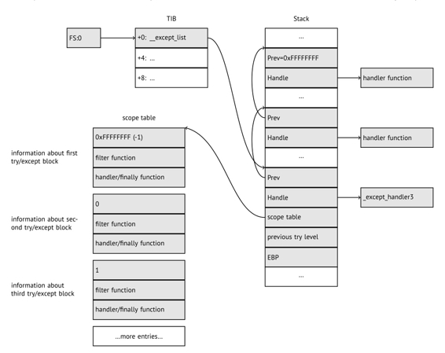
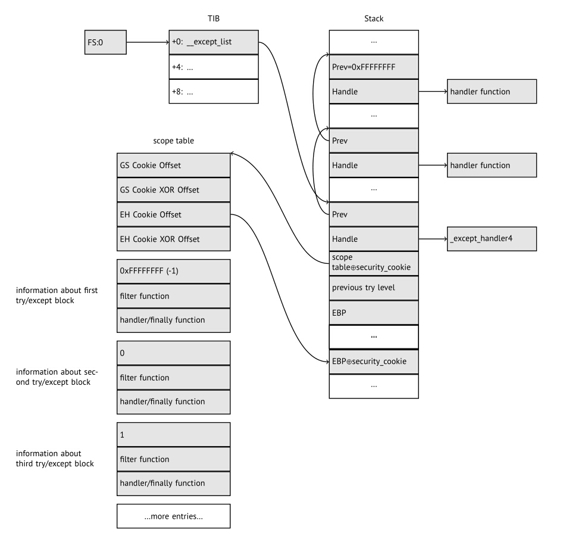

第六十八章
Windows Nt
68.1 CRT(win32)
程序一开始就从main()函数执行的？事实并非如此。如果我们用IDA或者HIEW打开一个可执行文件，我们可以看到OEP（Original Entry Point）指向了其它代码块。这些代码做了一些维护和准备工作之后再把控制流交给我们的代码。这就是所谓的startup-code或叫CRT code(C RunTime)。
main()函数通过一个数组接收命令行传递过来的参数，环境变量与此类似。通常情况下，传递一个字符串到程序之后，CRT code会用空格来分割它们。CRT code同样也准备了一个envp来存放环境变量。如果是GUI版本的win32程序，入口函数需要使用WinMain()来代替main()函数，它也有自己的参数。
int CALLBACK WinMain(
_In_ HINSTANCE hInstance,
_In_ HINSTANCE hPrevInstance,
_In_ LPSTR lpCmdLine,
_In_ int nCmdShow
);
CRT code同样会准备好它所需要的所有参数。
此外，main()函数的返回值是它的退出码。CRT code将它作为ExitProcess()的参数。
通常，每个编译器都有它自己的CRT code。
下面是MSVC 2008特有的CRT code。
___tmainCRTStartup proc near
var_24 = dword ptr -24h
var_20 = dword ptr -20h
var_1C = dword ptr -1Ch
ms_exc = CPPEH_RECORD ptr -18h
push 14h
push offset stru_4092D0
call __SEH_prolog4
mov eax, 5A4Dh
cmp ds:400000h, ax
jnz short loc_401096
mov eax, ds:40003Ch
cmp dword ptr [eax+400000h], 4550h
jnz short loc_401096
mov ecx, 10Bh
cmp [eax+400018h], cx
jnz short loc_401096
cmp dword ptr [eax+400074h], 0Eh
jbe short loc_401096
xor ecx, ecx
cmp [eax+4000E8h], ecx
setnz cl
mov [ebp+var_1C], ecx
jmp short loc_40109A
loc_401096: ; CODE XREF: ___tmainCRTStartup+18
; ___tmainCRTStartup+29 ...
and [ebp+var_1C], 0
loc_40109A: ; CODE XREF: ___tmainCRTStartup+50
push 1
call __heap_init
pop ecx
test eax, eax
jnz short loc_4010AE
push 1Ch
call _fast_error_exit
pop ecx
loc_4010AE: ; CODE XREF: ___tmainCRTStartup+60
call __mtinit
test eax, eax
jnz short loc_4010BF
push 10h
call _fast_error_exit
pop ecx
loc_4010BF: ; CODE XREF: ___tmainCRTStartup+71
call sub_401F2B
and [ebp+ms_exc.disabled], 0
call __ioinit
test eax, eax
jge short loc_4010D9
push 1Bh
call __amsg_exit
pop ecx
loc_4010D9: ; CODE XREF: ___tmainCRTStartup+8B
call ds:GetCommandLineA
mov dword_40B7F8, eax
call ___crtGetEnvironmentStringsA
mov dword_40AC60, eax
call __setargv
test eax, eax
jge short loc_4010FF
push 8
call __amsg_exit
pop ecx
loc_4010FF: ; CODE XREF: ___tmainCRTStartup+B1
call __setenvp
test eax, eax
jge short loc_401110
push 9
call __amsg_exit
pop ecx
loc_401110: ; CODE XREF: ___tmainCRTStartup+C2
push 1
call __cinit
pop ecx
test eax, eax
jz short loc_401123
push eax
call __amsg_exit
pop ecx
loc_401123: ; CODE XREF: ___tmainCRTStartup+D6
mov eax, envp
mov dword_40AC80, eax
push eax ; envp
push argv ; argv
push argc ; argc
call _main
add esp, 0Ch
mov [ebp+var_20], eax
cmp [ebp+var_1C], 0
jnz short $LN28
push eax ; uExitCode
call $LN32
$LN28: ; CODE XREF: ___tmainCRTStartup+105
call __cexit
jmp short loc_401186
$LN27: ; DATA XREF: .rdata:stru_4092D0
mov eax, [ebp+ms_exc.exc_ptr] ; Exception filter 0 for function 401044
mov ecx, [eax]
mov ecx, [ecx]
mov [ebp+var_24], ecx
push eax
push ecx
call __XcptFilter
pop ecx
pop ecx
$LN24:
retn
$LN14: ; DATA XREF: .rdata:stru_4092D0
mov esp, [ebp+ms_exc.old_esp] ; Exception handler 0 for function 401044
mov eax, [ebp+var_24]
mov [ebp+var_20], eax
cmp [ebp+var_1C], 0
jnz short $LN29
push eax ; int
call __exit
$LN29: ; CODE XREF: ___tmainCRTStartup+135
call __c_exit
loc_401186: ; CODE XREF: ___tmainCRTStartup+112
mov [ebp+ms_exc.disabled], 0FFFFFFFEh
mov eax, [ebp+var_20]
call __SEH_epilog4
retn
在这里我们看到代码调用了GetCommandLineA()，setargv()和setenvp()去填充argc，argv，envp全局变量。
最后，使用这些参数去调用main()函数。
有些函数调用了与自身类似的函数，如heap_init()，ioinit()。
如果你尝试在CRT code代码中使用malloc()，它将异常退出下面的错误：
runtime error R6030
- CRT not initialized
在C++中，全局对象的初始化也同样发生在main()函数执行之前的CRT：51.4.1。
main()函数的返回值传给cexit()或$LN32，后者调用doexit()。
能否摆脱CRT？这个当然，如果你知道你在做什么的话。
MSVC的链接器可以通过/ENTRY选项设置入口函数。
#include <windows.h>
int main()
{
MessageBox (NULL, "hello, world", "caption", MB_OK);
};
让我们用MSVC 2008来编译它。
cl no_crt.c user32.lib /link /entry:main
我们可以获得一个大小为2560字节的runnable.exe。它有一个PE头，调用MessageBox的指令，数据段中有两串字符串，而MessageBox函数导入自user32.DLL。
这个程序能够正常运行，但你不能在main()函数里面使用WinMain()的四个参数。准确点来说你能，但是这些参数并没有在执行的时候准备好。
cl no_crt.c user32.lib /link /entry:main /align:16
它会报一个链接警告：
LINK : warning LNK4108: /ALIGN specified without /DRIVER; image may not run
我们可以获得一个720字节的exe文件。它可以在Windows 7 x86上正常运行，但是没办法在x64上运行（当你运行它的时候会将先是一条错误信息）。更多的优化可能可以提高执行效率，但如你所见，很快就出现了兼容问题。
68.2 Win32 PE
PE是Windows下的可执行文件格式。
.exe，.dll，.sys文件它们之间的区别是，.exe和.sys文件通常没有导出表，只有导入表。
DLL文件和其它PE文件类似，有一个入口点（OEP）（DllMain()函数），但一般情况下很少DLL带有这个函数。
.sys通常是一个设备驱动程序。
作为驱动程序，Windows需要检验它的PE文件并保证它是正确的。
从Windows Vista开始，一个驱动程序文件必须拥有数字签名，否则它会被拒绝加载。
每个PE文件都由一段打印“This program cannot be run in DOS mode.”的DOS程序块开始。如果你的程序运行于DOS或者Windows 3.1（这些OS并不识别PE文件格式），这个DOS程序块将被执行打印。
68.2.1 术语
- Module（模块） - 一个exe/dll文件。
- Process（进程） - 加载到内存中并正在运行的程序，通常由一个exe文件和多个dll文件组成。
- Process memory（进程内存） - 进程所在容所。每个进程都拥有自己的内存。通常是加载的模块，栈内存，堆内存等等。
- VA（虚拟地址） - 可以被程序所使用的地址。
- Base address（基地址） - 模块被加载到进程内存后的地址。
- RVA（相对虚拟地址） - VA地址减去基地址后的地址。PE文件中有许多地址使用RVA地址。
- IAT（导入地址表）- 一个导入符号地址的数组。通常由一个IMAGE_DIRECTORY_ENTRY_IAT数据目录指向IAT。值得注意的是，IDA可会给IAT分配一个名为.idata的pseudo-section，即使IAT是其它section的一部分。
- INT（导入名称表） - 一个导入符号名的数组。
68.2.2 Base address
问题是，模块（DLL）的开发者不可能事先知道哪些地址分配给哪些模块使用的。
这就是为什么两个具有相同基地址的DLL需要一个加载到这个基地址而另外一个加载到进程的其它空闲内存处并调整第二个DLL的虚拟地址。
通常情况下，MSVC链接器生成.exe文件的基地址是0x400000，并把代码段安排在0x401000。这意味着该代码段的RVA地址是0x1000。DLL的基地址通常被MSVC链接器安排在0x10000000。
还有一种情况下加载模块时会导致基地址浮动。
这就是ASLR(Address Space Layout Randomization（地址空间布局随机化）)。
一个shellcode想要执行必须调用到系统的函数。
在老的操作系统当中（如果是WindowsNT，则在Windows Vista之前），系统的DLL（如kernel32.dll，user32.dll）总是加载到已知的地址。如果我们还记得的话，它们的版本是很少有变动的。因为函数的地址是固定的，shellcode可以直接调用它们。
为了避免这种情况，ASLR每次在加载模块的时候都会随机安排它们的基地址。
支持ASLR的程序在PE头中会设置IMAGE_DLL_CHARACTERISTICS_DYNAMIC_BASE标识表明其支持ASLR。
68.2.3 Subsystem
还有一个subsystem字段, 通常是:
- native (sys驱动程序)
- console (控制台程序)
- GUI (图形程序)
68.2.4 OS version
PE文件还规定了可以加载它的最小Windows版本号。有一个表保存了PE的版本号和相应的Windows开发代号。
举个例子，MSVC 2005编译的.exe文件运行在Windows NT4（version 4.00）。但MSVC 2008不是（生成文件的版本是5.00，至少运行于Windows 2000）。
MSVC 2012生成的.exe文件默认是6.00版本，最低平台要求至少是Windows Vista。但可以通过更改编译选项，强制编译器支持Windows XP。
68.2.5 Sections
一部分section似乎存在于所有可执行文件格式里面。
下面的标志位用于区分代码和常量数据：
- 当IMAGE_SCN_CNT_CODE或IMAGE_SCN_MEM_EXECUTE被置位，表示该section是一个可执行代码。
- 在数据section中，IMAGE_SCN_CNT_INITIALIZED_DATA，IMAGE_SCN_MEM_READ和IMAGE_SCN_MEM_WRITE被置位。
- 在未初始化section和空section中，IMAGE_SCN_CNT_UNINITIALIZED_DATA， IMAGE_SCN_MEM_READ和IMAGE_SCN_MEM_WRITE被置位。
- 在常量数据section（写保护）中，IMAGE_SCN_CNT_INITIALIZED_DATA和IMAGE_SCN_MEM_READ被置位，但不可以置位 IMAGE_SCN_MEM_WRITE。当一个进程尝试在这个section写数据时，进程会崩溃掉。
每个section在PE文件可能有一个名字，但是它并不是很重要。通常（但不总是）代码section的名字是.text，数据section是.data，常量数据section是.rdata(readable data)。其它流行的名字还有：
- .idata—imports section（导入section）。IDA可能会创建一个类似(68.2.1)的pseudo-section。
- .edata—exports section（导出section）。
- .pdata—在Windows NT（MIPS，IA64，x64）包含了所有异常信息。
- .reloc—relocs section（重定位section）
- .bss—uninitialized data（未初始化数据（BSS））
- .tls—thread local storage（线程局部存储（TLS））
- .rsrc—resources（资源）
- .CRT—可能存在古老的MSVC版本编译出来的二进制文件里面。
PE文件的打包器/加密器经常打乱section名字或者把名字替换为自己的。
MSVC允许你任意命名section。
一些编译器和链接器可以添加一个用于调试符号和其他调试信息的section(例如MinGW)。但不包括MSVC现在的版本(提供单独的PDB文件用于这个目的)。
这是PE文件的section结构体定义：
typedef struct _IMAGE_SECTION_HEADER {
BYTE Name[IMAGE_SIZEOF_SHORT_NAME];
union {
DWORD PhysicalAddress;
DWORD VirtualSize;
} Misc;
DWORD VirtualAddress;
DWORD SizeOfRawData;
DWORD PointerToRawData;
DWORD PointerToRelocations;
DWORD PointerToLinenumbers;
WORD NumberOfRelocations;
WORD NumberOfLinenumbers;
DWORD Characteristics;
} IMAGE_SECTION_HEADER, *PIMAGE_SECTION_HEADER;
一些相关的字段的解释：PointerToRawData是在磁盘文件中的偏移，VirtualAddress在Hiew中是装载到内存中的RVA。
68.2.6 Relocations (relocs)
也称为FIXUP-s（在Hiew）。
他们也存在于几乎所有的可执行文件格式。
显然，模块可以被加载到各种基地地址，但如何处理全局变量？一个解决方案是使用位置无关代码（67.1章），但它并不是总是有用的。
这就是重定位表存在的理由：当模块加载到不同的基地址的时候，它们的入口地址都需要修正。
举个例子，有一个全局变量的地址是0x410000，它是这样访问的：
A1 00 00 41 00 mov eax, [000410000]
模块的基地址是0x400000，全局变量的RVA地址是0x10000。
如果模块加载到0x500000这个基地址，那么全局变量实际的地址必须是0x510000。
我们可以看到，在0xA1字节之后，变量的地址编码到MOV指令中的。
这就是为什么0xA1字节之后的4个字节地址写在了重定位表。
如果模块加载到不同的基地址，操作系统加载器枚举重定位表中所有地址，查找每个32位的地址，减去原来的基地址(我们这里得到了RVA)，并添加新的基地址。
如果模块加载到原来的基地址，那么不做任何事情。
所有的全局变量都可以这样处理。
重定位表可能有各种类型，但是在x86处理器的Windows中，通常是IMAGE_REL_BASED_HIGHLOW。
顺便说一下，重定位表在Hiew是隐藏的。相关例子请查看（Figure 7.12）。
OllyDbg会用下划线标识哪些使用了重定位表。相关例子请查看（Figure 13.11）。
68.2.7 Exports and imports
众所周知，任何可执行文件都必须使用操作系统提供的服务和其它一些动态链接库。
可以说，一个模块（通常是DLL）的函数通常都是导出提供给其它模块使用（.exe文件或其它DLL）。
这种情况下，每个DLL都有一个导出（exports）表，由模块的函数加它们的地址组成。
每个exe或dll文件也有一个导入（imports）表，里面包含了程序执行所需函数对应的DLL文件名。
在加载main.exe文件之后，操作系统加载器开始处理导入表：它加载所需的DLL文件，接着在DLL的导入表查找对应函数名字的地址，然后把它们的地址写到main.exe模块的IAT（（Import Address Table）导入表）。
我们可以看到，加载器必须大量比较函数名，但字符串比较效率并不是很高。所以有一个支持“ordinals”或“hints”的东西，表示函数存储在表中的序号，用于代替它们的函数名。
这使得它们可以更快地加载DLL。Ordinals在导出表中永远都存在。
举个例子：一个使用MFC库的程序都是通过ordinals加载mfc*.dll，在这种程序中，INT（Import Name Table）是不存在MFC函数名字的。
使用IDA加载这类程序的时候，如果告诉它mfc*.dll文件路径，则可以看到函数名。如果不告诉IDA这些DLL路径，它会显示诸如mfc80_123而不是函数名。
Imports section
编译器通常会给导入表及其相关内容分配一个单独的section（名字类似.idata），但这不是一个强制规定。
因为术语混乱，导入表是一个比较令人困惑的地方。让我们尝试一下整理这些信息。

Figure 68.1: A scheme that unites all PE-file structures related to imports
里面主要的结构是IMAGE_IMPORT_DESCRIPTOR数组。每个被加载进来的DLL占用一个元素。
每个元素包含一个文本字符串（DLL名字）的RVA地址。
OriginalFirstThink是INT表的RVA地址。这是一个RVA地址的数组，里面每个成员都指向一个函数名的文本字符串。每个函数名的字符串之前是一个16位的("hint")-"ordinal"整数。
加载的时候，如果可以通过ordinal找到函数，那么就不需要使用字符串比较来查找函数。数组的最后一个元素是0。还有一个FirstThunk字段指向IAT表，这个地方是加载器重写需要重新解析函数的地址的RVA地址。
需要加载器重写地址的函数在IDA中加了诸如这种标记：__imp_CreateFileA。
加载器至少有两种方法重写地址：
代码会有诸如调用__imp_CreateFileA的指令，因为导入函数的地址在某种意义上是一个全局变量，当模块加载到不同的基地址时，call指令的地址被添加到重定位表中。 但是，显然这种方法可能会扩大重定位表。因为有可能从这个模块大量调用导入的函数。而且，重定位表太大的话会减慢模块的加载速度。
每个导入函数给它分配一条jmp指令，使用jmp指令加上重定位表的地址跳转到导入函数。这些入口点被称之为“thunks”，所有调用导入函数仅需要调用相对应的“thunk”，这种情况下不需要额外的重定位操作，因为这些CALL都使用相对地址，不需要额外的调整操作。
这两种方法可以组合使用。可能的话，链接器给那些被调用太多次的函数创建一个“thunk”，然而默认情况下不是这样。
顺便说一下，FirstThunk指向的函数地址数组不必要位于IAT section。举个例子，我曾经写的PE_add_import工具可以给.exe文件添加一个导入函数。在早些时候，这个工具可以让你的函数调用其它DLL文件的函数。我的工具添加了类似下面的代码：
MOV EAX, [yourdll.dll!function]
JMP EAX
FirstThunk指向第一条指令，换句话说，当加载yourdll.dll的时候，加载器在代码中写入function函数的正确地址。
还值得注意的是代码段通常是写保护的，因此我的工具在code section添加了一个IMAGE_SCN_MEM_WRITE标志位。否则，程序在加载的时候会爆出错误码为5（访问失败）的异常错误。
有人可能会问：如果我提供一个程序与一组不变的DLL文件，是有可能加快加载过程？
是的，它可以提前把函数的地址写入到导入表的FirstThunk数组。IMAGE_IMPORT_DESCRIPTOR结构有一个Timestamp字段。如果这个变量存在，则加载器会比较这个变量和DLL文件日期时间。如果它们相等，那么加载器不做任何事情，所以加载过程可以很快完成。这就是所谓的“old-style binding”。为了加快程序的加载，Matt Pietrek. “An In-Depth Look into the Win32 Portable Executable File Format”，建议你的程序安装在最终用户的计算机后不久做捆绑。
PE文件的打包器/加密器也可以压缩/加密导入表。在这种情况下，Windows的加载器当然不会加载所有需要的DLL。因此打包器/加密器只能通过LoadLibrary()和GetProcAddress()来获取所需函数。
安装在Windows系统中的标准DLL文件，IAT往往是位于PE文件的开头。据说，这是一种优化。加载时.exe文件不是全部加载到内存，它是“映射”和加载部分需要被访问到的内存。可能微软的开发者认为这样加载比较快。
68.2.8 Resources
资源在PE文件只是一组图标，图片，文本字符串，对话框描述。因为把它们从主代码分离了出来，所以多国语言程序很容易实现，只需要根据操作系统设置的语言去选择文本或图片的语言。
作为一个副作用，通过使用诸如ResHack的编辑器，即使在没有专业知识的情况下，也可以轻松地编辑和保存可执行文件的资源。
68.2.9 .NET
.NET的程序并不编译成机器码，而是编译成字节码。严格地说，是在.exe文件里面使用字节码代替x86机器。然而，进入入口点（OEP）还是需要一小段x86机器码:
jmp mscoree.dll!_CorExeMain
.NET的加载器位于mscoree.dll，由它来处理PE文件。它存在于之前的所有Windows XP操作系统。从XP启动的时候，OS的加载器能够探测.NET文件并通过JMP指令执行。
68.2.10 TLS
这个section包含了初始化TLS的数据（65章）（如果需要的话）。当一个新线程启动的时候，它的TLS数据使用这个section的数据进行初始化。
除此之外，PE文件规范还提供了TLS的初始化！当section，TLS callbacks存在，它们会在传递控制权到主入口点（OEP）之前被调用。这个功能广泛用于PE文件的打包和加密。
68.2.11 工具
- objdump - cygwin版本可以反汇编PE文件
- Hiew - (参考73章)
- pefile - 一个处理PE文件的Python库
- ResHack AKA Resource Hacker — 资源编辑器
- PE_add_import — 添加符号到导入表的简易工具
- PE_patcher — 修补PE文件的简易工具
- PE_search_str_refs — 查找函数在PE文件里对应的字符串的简易工具
68.2.12 扩展阅读
Daniel Pistelli — The .NET File Format
68.3 Windows SEH
68.3.1 让我们先忘了MSVC
在Windows，SEH（Structured Exception Handling（结构化异常处理））是异常处理的一种机制。然而，它是语言无关的，不管是C++或者其它OOP语言。我们可以看到SEH（从C++和MSVC扩展）是独立实现的。
每个运行的进程都有一个SEH处理链，TIB有它最后的处理程序的地址。当异常发生时(除零，错误的地址访问，用户通过调用RaiseException()函数引发异常)，操作系统在TIB找到最后的处理程序并调用它，获取异常时CPU的状态信息（如寄存器的值等等）。处理程序当前的异常能否修复，如果能，则修复该异常。如果不能，它通知操作系统无法处理它并由操作系统调用异常处理链中的下一个处理程序,直到处理程序能够处理的异常被发现。
在异常处理链的结尾处有一个标准的处理程序，它显示一个对话框用于通知用户进程崩溃，然后把一些崩溃时CPU的状态信息，收集起来并将其发送给微软开发商。

Figure 68.2: Windows XP

Figure 68.3: Windows XP

Figure 68.4: Windows 7

Figure 68.5: Windows 8.1
早些时候，这个处理程序被称为Dr.Watson。
顺便说一句，有些开发人员会在自己的处理程序发送程序崩溃的信息。通过SetUnhandledExceptionFilter()函数注册异常处理程序，如果操作系统没有任何其它方式处理异常，则调用它。一个例子是Oracle RDBMS，它保存了CPU所有可能有用的信息和内存状态的巨大转储文件。
让我们写一个自己的primitive exception handler：
#include <windows.h>
#include <stdio.h>
DWORD new_value=1234;
EXCEPTION_DISPOSITION __cdecl except_handler(
struct _EXCEPTION_RECORD *ExceptionRecord,
void * EstablisherFrame,
struct _CONTEXT *ContextRecord,
void * DispatcherContext )
{
unsigned i;
printf ("%s\n", __FUNCTION__);
printf ("ExceptionRecord->ExceptionCode=0x%p\n", ExceptionRecord->ExceptionCode);
printf ("ExceptionRecord->ExceptionFlags=0x%p\n", ExceptionRecord->ExceptionFlags);
printf ("ExceptionRecord->ExceptionAddress=0x%p\n", ExceptionRecord->ExceptionAddress);
if (ExceptionRecord->ExceptionCode==0xE1223344)
{
printf ("That's for us\n");
// yes, we "handled" the exception
return ExceptionContinueExecution;
}
else if (ExceptionRecord->ExceptionCode==EXCEPTION_ACCESS_VIOLATION)
{
printf ("ContextRecord->Eax=0x%08X\n", ContextRecord->Eax);
// will it be possible to 'fix' it?
printf ("Trying to fix wrong pointer address\n");
ContextRecord->Eax=(DWORD)&new_value;
// yes, we "handled" the exception
return ExceptionContinueExecution;
}
else
{
printf ("We do not handle this\n");
// someone else's problem
return ExceptionContinueSearch;
};
}
int main()
{
DWORD handler = (DWORD)except_handler; // take a pointer to our handler
// install exception handler
__asm
{ // make EXCEPTION_REGISTRATION record:
push handler // address of handler function
push FS:[0] // address of previous handler
mov FS:[0],ESP // add new EXECEPTION_REGISTRATION
}
RaiseException (0xE1223344, 0, 0, NULL);
// now do something very bad
int* ptr=NULL;
int val=0;
val=*ptr;
printf ("val=%d\n", val);
// deinstall exception handler
__asm
{ // remove our EXECEPTION_REGISTRATION record
mov eax,[ESP] // get pointer to previous record
mov FS:[0], EAX // install previous record
add esp, 8 // clean our EXECEPTION_REGISTRATION off stack
}
return 0;
}
FS段寄存器：在Win32指向TIB。在TIB的第一个元素是指向异常处理指针链中的最后一个处理程序，我们将自己的异常处理程序的地址保存在这里。异常处理链的结点结构体名字是_EXCEPTION_REGISTRATION，这是一个单链表实现的栈容器。
Listing 68.1: MSVC/VC/crt/src/exsup.inc
\_EXCEPTION\_REGISTRATION struc
prev dd ?
handler dd ?
\_EXCEPTION\_REGISTRATION ends
每个结点的handler字段指向一个异常处理程序，每个结点的prev字段指向在栈中的上一个结点。最后一个结点的prev指向0xFFFFFFFF(-1)。

我们的处理程序安装后，我们调用RaiseException()。这是一个用户异常。处理程序检查异常代码，如果异常代码是0xE1223344，它返回ExceptionContinueExecution。这意味着处理程序修复了CPU的状态（通常是EIP/ESP寄存器），操作系统可以恢复运行。如果你稍微修改一下代码，处理程序返回ExceptionContinueSearch，那么操作系统将调用下一个处理程序，如果没有找到处理程序（因为没人捕获该异常），你会看到标准的Windows进程崩溃对话框。
系统异常和用户异常之间的区别是什么？这里有系统的：
| as defined in WinBase.h | as defined in ntstatus.h numerical | value |
|---|---|---|
| EXCEPTION_ACCESS_VIOLATION | STATUS_ACCESS_VIOLATION | 0xC0000005 |
| EXCEPTION_DATATYPE_MISALIGNMENT | STATUS_DATATYPE_MISALIGNMENT | 0x80000002 |
| EXCEPTION_BREAKPOINT | STATUS_BREAKPOINT | 0x80000003 |
| EXCEPTION_SINGLE_STEP | STATUS_SINGLE_STEP | 0x80000004 |
| EXCEPTION_ARRAY_BOUNDS_EXCEEDED | STATUS_ARRAY_BOUNDS_EXCEEDED | 0xC000008C |
| EXCEPTION_FLT_DENORMAL_OPERAND | STATUS_FLOAT_DENORMAL_OPERAND | 0xC000008D |
| EXCEPTION_FLT_DIVIDE_BY_ZERO | STATUS_FLOAT_DIVIDE_BY_ZERO | 0xC000008E |
| EXCEPTION_FLT_INEXACT_RESULT | STATUS_FLOAT_INEXACT_RESULT | 0xC000008F |
| EXCEPTION_FLT_INVALID_OPERATION | STATUS_FLOAT_INVALID_OPERATION | 0xC0000090 |
| EXCEPTION_FLT_OVERFLOW | STATUS_FLOAT_OVERFLOW | 0xC0000091 |
| EXCEPTION_FLT_STACK_CHECK | STATUS_FLOAT_STACK_CHECK | 0xC0000092 |
| EXCEPTION_FLT_UNDERFLOW | STATUS_FLOAT_UNDERFLOW | 0xC0000093 |
| EXCEPTION_INT_DIVIDE_BY_ZERO | STATUS_INTEGER_DIVIDE_BY_ZERO | 0xC0000094 |
| EXCEPTION_INT_OVERFLOW | STATUS_INTEGER_OVERFLOW | 0xC0000095 |
| EXCEPTION_PRIV_INSTRUCTION | STATUS_PRIVILEGED_INSTRUCTION | 0xC0000096 |
| EXCEPTION_IN_PAGE_ERROR | STATUS_IN_PAGE_ERROR | 0xC0000006 |
| EXCEPTION_ILLEGAL_INSTRUCTION | STATUS_ILLEGAL_INSTRUCTION | 0xC000001D |
| EXCEPTION_NONCONTINUABLE_EXCEPTION | STATUS_NONCONTINUABLE_EXCEPTION | 0xC0000025 |
| EXCEPTION_STACK_OVERFLOW | STATUS_STACK_OVERFLOW | 0xC00000FD |
| EXCEPTION_INVALID_DISPOSITION | STATUS_INVALID_DISPOSITION | 0xC0000026 |
| EXCEPTION_GUARD_PAGE | STATUS_GUARD_PAGE_VIOLATION | 0x80000001 |
| EXCEPTION_INVALID_HANDLE | STATUS_INVALID_HANDLE | 0xC0000008 |
| EXCEPTION_POSSIBLE_DEADLOCK | STATUS_POSSIBLE_DEADLOCK | 0xC0000194 |
| CONTROL_C_EXIT | STATUS_CONTROL_C_EXIT | 0xC000013A |
这些异常码的定义规则是：
| 31 | 29 | 28 | 27 ~ 16 | 15 ~ 0 |
|---|---|---|---|---|
| S | U | 0 | Facility code | Error code |
S是一个基本代码: 11—error; 10—warning; 01—informational; 00—success；U表示是否是用户代码。
这就是为什么我选择了0xE1223344，0xE(1110b)意味着1）user exception（用户异常）;2）error（错误）。
当我们尝试读取地址为0的内存时。因为这个地址在win32中并不被使用，所以会引发一个异常。通过检查异常码是否等于EXCEPTION_ACCESS_VIOLATION常量。
读0地址内存的代码看起来像这样：
Listing 68.2: MSVC 2010
...
xor eax, eax
mov eax, DWORD PTR [eax] ; exception will occur here
push eax
push OFFSET msg
call _printf
add esp, 8
...
能否修复“on the fly”这个错误然后继续执行程序？当然，我们的异常处理程序可以修复EAX值然后让操作系统继续执行下去。这是我们该做的。printf()将打印1234，因为我们的处理程序执行后EAX不是0，而是全局变量new_value的地址。
若内存管理器有一个关于CPU的错误信号，CPU会暂停线程，在Windows内核查找异常处理程序，然后一个一个调用SEH链的handler。
我在这里使用MSVC 2010，当然，没有任何保证EAX将用于这个指针。
这个地址替换的技巧非常的漂亮，我经常使用它插入到SEH内部中。不过，我忘记了在哪里用它修复“on the fly”错误。
为什么SHE相关的记录存储在栈上而不是其它地方？据说这是因为操作系统不需要在函数执行完成之后关心这些信息。但我不能100%肯定。这有点类似alloca()。
68.3.2 现在让我们回到MSVC
据说，微软的程序员需要在C语言而不是C++上使用异常，所以它们在MSVC上添加了一个非标准的C扩展。它与C++的异常没有任何关联。
__try
{
...
}
__except(filter code)
{
handler code
}
“Finally”块也许能代替handler code：
__try
{
...
}
__finally
{
...
}
filte code是一个表达式，告诉handler code是否对应引发的异常。如果你的filte code太大而无法使用一个表达式，可以定义一个单独的filte函数。
在Windows内核有很多这样的结构，下面是几个例子（WRK（Windows Research Kernel））：
Listing 68.3: WRK-v1.2/base/ntos/ob/obwait.c
try {
KeReleaseMutant( (PKMUTANT)SignalObject,
MUTANT_INCREMENT,
FALSE,
TRUE );
} except((GetExceptionCode () == STATUS_ABANDONED ||
GetExceptionCode () == STATUS_MUTANT_NOT_OWNED)?
EXCEPTION_EXECUTE_HANDLER :
EXCEPTION_CONTINUE_SEARCH) {
Status = GetExceptionCode();
goto WaitExit;
}
Listing 68.4: WRK-v1.2/base/ntos/cache/cachesub.c
try {
RtlCopyBytes( (PVOID)((PCHAR)CacheBuffer + PageOffset),
UserBuffer,
MorePages ?
(PAGE_SIZE - PageOffset) :
(ReceivedLength - PageOffset) );
} except( CcCopyReadExceptionFilter( GetExceptionInformation(), Status ) ) {
这里是一个filter code的例子：
Listing 68.5: WRK-v1.2/base/ntos/cache/copysup.c
LONG
CcCopyReadExceptionFilter(
IN PEXCEPTION_POINTERS ExceptionPointer,
IN PNTSTATUS ExceptionCode
)
/*++
Routine Description:
This routine serves as a exception filter and has the special job of
extracting the "real" I/O error when Mm raises STATUS_IN_PAGE_ERROR
beneath us.
Arguments:
ExceptionPointer - A pointer to the exception record that contains
the real Io Status.
ExceptionCode - A pointer to an NTSTATUS that is to receive the real
status.
Return Value:
EXCEPTION_EXECUTE_HANDLER
--*/
{
*ExceptionCode = ExceptionPointer->ExceptionRecord->ExceptionCode;
if ( (*ExceptionCode == STATUS_IN_PAGE_ERROR) &&
(ExceptionPointer->ExceptionRecord->NumberParameters >= 3) ) {
*ExceptionCode = (NTSTATUS) ExceptionPointer->ExceptionRecord->ExceptionInformation[2];
}
ASSERT( !NT_SUCCESS(*ExceptionCode) );
return EXCEPTION_EXECUTE_HANDLER;
}
在内部，SEH是操作系统支持的异常扩展。但是处理函数是_except_handler3（对于SEH3）或_except_handler4（对于SEH4）。 这个处理函数的代码是与MSVC相关的，它位于它的库或在msvcr*.dll文件。其他的Win32编译器可以提供与之完全不同的机制。
SEH3
SEH3有一个_except_handler3处理函数，而且扩展了_EXCEPTION_REGISTRATION表，并添加了一个指向scope table和previous try level变量。SEH4扩展了scope table缓冲溢出保护。
scope table是一个表，包含了指向filter和handler code的块和每个try/except嵌套。

再者，操作系统只关心prev/handle字段。_except_handler3函数的工作是读取其他字段和scope table，并决定由哪些处理程序来执行。
_except_handler3函数的源代码是闭源的。然而，Sanos操作系统的win32兼容性层重新实现相同的功能。其它类似的实现有Wine和ReactOS。
如果filter指针为NULL，handler指针则指向finally代码块。
执行期间，栈中的previous try level变量发生变化，所以_except_handler3可以获取当前嵌套级的信息，才知道要使用scope table哪一表项。
SEH3: 一个try/except块例子
#include <stdio.h>
#include <windows.h>
#include <excpt.h>
int main()
{
int* p = NULL;
__try
{
printf("hello #1!\n");
*p = 13; // causes an access violation exception;
printf("hello #2!\n");
}
__except(GetExceptionCode()==EXCEPTION_ACCESS_VIOLATION ?
EXCEPTION_EXECUTE_HANDLER : EXCEPTION_CONTINUE_SEARCH)
{
printf("access violation, can't recover\n");
}
}
Listing 68.6: MSVC 2003
$SG74605 DB 'hello #1!', 0aH, 00H
$SG74606 DB 'hello #2!', 0aH, 00H
$SG74608 DB 'access violation, can''t recover', 0aH, 00H
_DATA ENDS
; scope table
CONST SEGMENT
$T74622 DD 0ffffffffH ; previous try level
DD FLAT:$L74617 ; filter
DD FLAT:$L74618 ; handler
CONST ENDS
_TEXT SEGMENT
$T74621 = -32 ; size = 4
_p$ = -28 ; size = 4
__$SEHRec$ = -24 ; size = 24
_main PROC NEAR
push ebp
mov ebp, esp
push -1 ; previous try level
push OFFSET FLAT:$T74622 ; scope table
push OFFSET FLAT:__except_handler3 ; handler
mov eax, DWORD PTR fs:__except_list
push eax ; prev
mov DWORD PTR fs:__except_list, esp
add esp, -16
push ebx ; saved 3 registers
push esi ; saved 3 registers
push edi ; saved 3 registers
mov DWORD PTR __$SEHRec$[ebp], esp
mov DWORD PTR _p$[ebp], 0
mov DWORD PTR __$SEHRec$[ebp+20], 0 ; previous try level
push OFFSET FLAT:$SG74605 ; 'hello #1!'
call _printf
add esp, 4
mov eax, DWORD PTR _p$[ebp]
mov DWORD PTR [eax], 13
push OFFSET FLAT:$SG74606 ; 'hello #2!'
call _printf
add esp, 4
mov DWORD PTR __$SEHRec$[ebp+20], -1 ; previous try level
jmp SHORT $L74616
; filter code
$L74617:
$L74627:
mov ecx, DWORD PTR __$SEHRec$[ebp+4]
mov edx, DWORD PTR [ecx]
mov eax, DWORD PTR [edx]
mov DWORD PTR $T74621[ebp], eax
mov eax, DWORD PTR $T74621[ebp]
sub eax, -1073741819; c0000005H
neg eax
sbb eax, eax
inc eax
$L74619:
$L74626:
ret 0
; handler code
$L74618:
mov esp, DWORD PTR __$SEHRec$[ebp]
push OFFSET FLAT:$SG74608 ; 'access violation, can''t recover'
call _printf
add esp, 4
mov DWORD PTR __$SEHRec$[ebp+20], -1 ; setting previous try level back to -1
$L74616:
xor eax, eax
mov ecx, DWORD PTR __$SEHRec$[ebp+8]
mov DWORD PTR fs:__except_list, ecx
pop edi
pop esi
pop ebx
mov esp, ebp
pop ebp
ret 0
_main ENDP
_TEXT ENDS
END
在这里我们可以看到SEH帧是如果在栈中构建出来的，scope table位于CONST segment-事实上，这些字段是不被改变的。一件有趣的事情是如何改变previous try level变量。它的初始化值是0xFFFFFFFF(-1)。当进入try语句块的时候，变量赋值为0。当try语句块结束的时候，写回-1。我们还能看到filter和handler code的地址。因此，我们可以很容易在函数里看到try/except是如何构造的。
由于函数序言的SEH安装代码被多个函数共享，有时候编译器会在函数序言插入调用SEH_prolog()函数，这就完成了这个任务。该SEH回收代码是SEH_epilog()函数。
让我们尝试用tracer运行这个例子：
tracer.exe -l:2.exe --dump-seh
Listing 68.7: tracer.exe output
EXCEPTION_ACCESS_VIOLATION at 2.exe!main+0x44 (0x401054) ExceptionInformation[0]=1
EAX=0x00000000 EBX=0x7efde000 ECX=0x0040cbc8 EDX=0x0008e3c8
ESI=0x00001db1 EDI=0x00000000 EBP=0x0018feac ESP=0x0018fe80
EIP=0x00401054
FLAGS=AF IF RF
* SEH frame at 0x18fe9c prev=0x18ff78 handler=0x401204 (2.exe!_except_handler
SEH3 frame. previous trylevel=0
scopetable entry[0]. previous try level=-1, filter=0x401070 (2.exe!main+0x60) handler=0x401088 (2.exe!main+0x78)
* SEH frame at 0x18ff78 prev=0x18ffc4 handler=0x401204 (2.exe!_except_handler3)
SEH3 frame. previous trylevel=0
scopetable entry[0]. previous try level=-1, filter=0x401531 (2.exe!mainCRTStartup+0x18d) handler=0x401545 (2.exe!mainCRTStartup+0x1a1)
* SEH frame at 0x18ffc4 prev=0x18ffe4 handler=0x771f71f5 (ntdll.dll!__except_handler4)
SEH4 frame. previous trylevel=0
SEH4 header: GSCookieOffset=0xfffffffe GSCookieXOROffset=0x0
EHCookieOffset=0xffffffcc EHCookieXOROffset=0x0
scopetable entry[0]. previous try level=-2, filter=0x771f74d0 (ntdll.dll!___safe_se_handler_table+0x20) handler=0x771f90eb (ntdll.dll!_TppTerminateProcess@4+0x43)
* SEH frame at 0x18ffe4 prev=0xffffffff handler=0x77247428 (ntdll.dll!_FinalExceptionHandler@16)
我们看到，SEH链包含4个handler。
前面两个是我们的例子。两个？但是我们只有一个？是的，一个是CRT的_mainCRTStartup()函数设置的。并至少作为FPU异常的处理。它的源码可以在MSVC的安装目录找到：crt/src/winxfltr.c。
第三个是ntdll.dll的SEH4，第四个handler也位于ntdll.dll，跟MSVC没什么关系，它有一个自描述函数名。
正如你所见，在一个链中有三种类型的处理函数：一个跟MSVC(最后一个)没什么关系和两个与MSVC关联的：SEH3和SEH4。
SEH3: 两个try/except块例子
#include <stdio.h>
#include <windows.h>
#include <excpt.h>
int filter_user_exceptions (unsigned int code, struct _EXCEPTION_POINTERS *ep)
{
printf("in filter. code=0x%08X\n", code);
if (code == 0x112233)
{
printf("yes, that is our exception\n");
return EXCEPTION_EXECUTE_HANDLER;
}
else
{
printf("not our exception\n");
return EXCEPTION_CONTINUE_SEARCH;
};
}
int main()
{
int* p = NULL;
__try
{
__try
{
printf ("hello!\n");
RaiseException (0x112233, 0, 0, NULL);
printf ("0x112233 raised. now let's crash\n");
*p = 13; // causes an access violation exception;
}
__except(GetExceptionCode()==EXCEPTION_ACCESS_VIOLATION ?
EXCEPTION_EXECUTE_HANDLER : EXCEPTION_CONTINUE_SEARCH)
{
printf("access violation, can't recover\n");
}
}
__except(filter_user_exceptions(GetExceptionCode(), GetExceptionInformation()))
{
// the filter_user_exceptions() function answering to the question
// "is this exception belongs to this block?"
// if yes, do the follow:
printf("user exception caught\n");
}
}
现在有两个try块，所以scope table现在有两个元素，每个块占用一个。Previous try level随着try块的进入或退出而改变。
Listing 68.8: MSVC 2003
$SG74606 DB 'in filter. code=0x%08X', 0aH, 00H
$SG74608 DB 'yes, that is our exception', 0aH, 00H
$SG74610 DB 'not our exception', 0aH, 00H
$SG74617 DB 'hello!', 0aH, 00H
$SG74619 DB '0x112233 raised. now let''s crash', 0aH, 00H
$SG74621 DB 'access violation, can''t recover', 0aH, 00H
$SG74623 DB 'user exception caught', 0aH, 00H
_code$ = 8 ; size = 4
_ep$ = 12 ; size = 4
_filter_user_exceptions PROC NEAR
push ebp
mov ebp, esp
mov eax, DWORD PTR _code$[ebp]
push eax
push OFFSET FLAT:$SG74606 ; 'in filter. code=0x%08X'
call _printf
add esp, 8
cmp DWORD PTR _code$[ebp], 1122867; 00112233H
jne SHORT $L74607
push OFFSET FLAT:$SG74608 ; 'yes, that is our exception'
call _printf
add esp, 4
mov eax, 1
jmp SHORT $L74605
$L74607:
push OFFSET FLAT:$SG74610 ; 'not our exception'
call _printf
add esp, 4
xor eax, eax
$L74605:
pop ebp
ret 0
_filter_user_exceptions ENDP
; scope table
CONST SEGMENT
$T74644 DD 0ffffffffH ; previous try level for outer block
DD FLAT:$L74634 ; outer block filter
DD FLAT:$L74635 ; outer block handler
DD 00H ; previous try level for inner block
DD FLAT:$L74638 ; inner block filter
DD FLAT:$L74639 ; inner block handler
CONST ENDS
$T74643 = -36 ; size = 4
$T74642 = -32 ; size = 4
_p$ = -28 ; size = 4
__$SEHRec$ = -24 ; size = 24
_main PROC NEAR
push ebp
mov ebp, esp
push -1 ; previous try level
push OFFSET FLAT:$T74644
push OFFSET FLAT:__except_handler3
mov eax, DWORD PTR fs:__except_list
push eax
mov DWORD PTR fs:__except_list, esp
add esp, -20
push ebx
push esi
push edi
mov DWORD PTR __$SEHRec$[ebp], esp
mov DWORD PTR _p$[ebp], 0
mov DWORD PTR __$SEHRec$[ebp+20], 0 ; outer try block entered. set previous try level to 0
mov DWORD PTR __$SEHRec$[ebp+20], 1 ; inner try block entered. set previous try level to 1
push OFFSET FLAT:$SG74617 ; 'hello!'
call _printf
add esp, 4
push 0
push 0
push 0
push 1122867 ; 00112233H
call DWORD PTR __imp__RaiseException@16
push OFFSET FLAT:$SG74619 ; '0x112233 raised. now let''s crash'
call _printf
add esp, 4
mov eax, DWORD PTR _p$[ebp]
mov DWORD PTR [eax], 13
mov DWORD PTR __$SEHRec$[ebp+20], 0 ; inner try block exited. set previous try level back to 0
jmp SHORT $L74615
; inner block filter
$L74638:
$L74650:
mov ecx, DWORD PTR __$SEHRec$[ebp+4]
mov edx, DWORD PTR [ecx]
mov eax, DWORD PTR [edx]
mov DWORD PTR $T74643[ebp], eax
mov eax, DWORD PTR $T74643[ebp]
sub eax, -1073741819; c0000005H
neg eax
sbb eax, eax
inc eax
$L74640:
$L74648:
ret 0
; inner block handler
$L74639:
mov esp, DWORD PTR __$SEHRec$[ebp]
push OFFSET FLAT:$SG74621 ; 'access violation, can''t recover'
call _printf
add esp, 4
mov DWORD PTR __$SEHRec$[ebp+20], 0 ; inner try block exited. set previous try level back to 0
$L74615:
mov DWORD PTR __$SEHRec$[ebp+20], -1 ; outer try block exited, set previous try level back to -1
jmp SHORT $L74633
; outer block filter
$L74634:
$L74651:
mov ecx, DWORD PTR __$SEHRec$[ebp+4]
mov edx, DWORD PTR [ecx]
mov eax, DWORD PTR [edx]
mov DWORD PTR $T74642[ebp], eax
mov ecx, DWORD PTR __$SEHRec$[ebp+4]
push ecx
mov edx, DWORD PTR $T74642[ebp]
push edx
call _filter_user_exceptions
add esp, 8
$L74636:
$L74649:
ret 0
; outer block handler
$L74635:
mov esp, DWORD PTR __$SEHRec$[ebp]
push OFFSET FLAT:$SG74623 ; 'user exception caught'
call _printf
add esp, 4
mov DWORD PTR __$SEHRec$[ebp+20], -1 ; both try blocks exited. set previous try level back to -1
$L74633:
xor eax, eax
mov ecx, DWORD PTR __$SEHRec$[ebp+8]
mov DWORD PTR fs:__except_list, ecx
pop edi
pop esi
pop ebx
mov esp, ebp
pop ebp
ret 0
_main ENDP
如果我们在handler中调用的printf()函数设置一个断点，可以看到另一个SEH handler如何被添加。同样，我们还可以看到scope table包含两个元素。
tracer.exe -l:3.exe bpx=3.exe!printf --dump-seh
Listing 68.9: tracer.exe output
(0) 3.exe!printf
EAX=0x0000001b EBX=0x00000000 ECX=0x0040cc58 EDX=0x0008e3c8
ESI=0x00000000 EDI=0x00000000 EBP=0x0018f840 ESP=0x0018f838
EIP=0x004011b6
FLAGS=PF ZF IF
* SEH frame at 0x18f88c prev=0x18fe9c handler=0x771db4ad (ntdll.dll!ExecuteHandler2@20+0x3a)
* SEH frame at 0x18fe9c prev=0x18ff78 handler=0x4012e0 (3.exe!_except_handler3)
SEH3 frame. previous trylevel=1
scopetable entry[0]. previous try level=-1, filter=0x401120 (3.exe!main+0xb0) handler=0x40113b (3.exe!main+0xcb)
scopetable entry[1]. previous try level=0, filter=0x4010e8 (3.exe!main+0x78) handler=0x401100 (3.exe!main+0x90)
* SEH frame at 0x18ff78 prev=0x18ffc4 handler=0x4012e0 (3.exe!_except_handler3)
SEH3 frame. previous trylevel=0
scopetable entry[0]. previous try level=-1, filter=0x40160d (3.exe!mainCRTStartup+0x18d) handler=0x401621 (3.exe!mainCRTStartup+0x1a1
* SEH frame at 0x18ffc4 prev=0x18ffe4 handler=0x771f71f5 (ntdll.dll!__except_handler4)
SEH4 frame. previous trylevel=0
SEH4 header: GSCookieOffset=0xfffffffe GSCookieXOROffset=0x0
EHCookieOffset=0xffffffcc EHCookieXOROffset=0x0
scopetable entry[0]. previous try level=-2, filter=0x771f74d0 (ntdll.dll!___safe_se_handler_table+0x20) handler=0x771f90eb (ntdll.dll!_TppTerminateProcess@4+0x43)
* SEH frame at 0x18ffe4 prev=0xffffffff handler=0x77247428 (ntdll.dll!_FinalExceptionHandler@16)
SEH4
在缓冲区攻击期间（18.2章），scope table的地址可以被重写。所以从MSVC 2005开始，SEH3升级到SEH4后有了缓冲区溢出保护。现在scope table指针与一个security cookie（一个随机值）做异或运算。scope table扩展了包含两个指向security cookie指针的头部。每个元素都有另一个栈内偏移值：栈帧的地址（EBP）与security_cookie异或。该值将在异常处理过程中读取并检查其正确性。栈中的security cookie每次都是随机的，所以远程攻击者无法预测到它。
SEH4的previous try level初始化值是-2而不是-1。

这里有两个使用MSVC编译的SEH4例子：
Listing 68.10: MSVC 2012: one try block example
$SG85485 DB 'hello #1!', 0aH, 00H
$SG85486 DB 'hello #2!', 0aH, 00H
$SG85488 DB 'access violation, can''t recover', 0aH, 00H
; scope table:
xdata$x SEGMENT
__sehtable$_main DD 0fffffffeH ; GS Cookie Offset
DD 00H ; GS Cookie XOR Offset
DD 0ffffffccH ; EH Cookie Offset
DD 00H ; EH Cookie XOR Offset
DD 0fffffffeH ; previous try level
DD FLAT:$LN12@main ; filter
DD FLAT:$LN8@main ; handler
xdata$x ENDS
$T2 = -36 ; size = 4
_p$ = -32 ; size = 4
tv68 = -28 ; size = 4
__$SEHRec$ = -24 ; size = 24
_main PROC
push ebp
mov ebp, esp
push -2
push OFFSET __sehtable$_main
push OFFSET __except_handler4
mov eax, DWORD PTR fs:0
push eax
add esp, -20
push ebx
push esi
push edi
mov eax, DWORD PTR ___security_cookie
xor DWORD PTR __$SEHRec$[ebp+16], eax ; xored pointer to scope table
xor eax, ebp
push eax ; ebp ^ security_cookie
lea eax, DWORD PTR __$SEHRec$[ebp+8] ; pointer to VC_EXCEPTION_REGISTRATION_RECORD
mov DWORD PTR fs:0, eax
mov DWORD PTR __$SEHRec$[ebp], esp
mov DWORD PTR _p$[ebp], 0
mov DWORD PTR __$SEHRec$[ebp+20], 0 ; previous try level
push OFFSET $SG85485 ; 'hello #1!'
call _printf
add esp, 4
mov eax, DWORD PTR _p$[ebp]
mov DWORD PTR [eax], 13
push OFFSET $SG85486 ; 'hello #2!'
call _printf
add esp, 4
mov DWORD PTR __$SEHRec$[ebp+20], -2 ; previous try level
jmp SHORT $LN6@main
; filter:
$LN7@main:
$LN12@main:
mov ecx, DWORD PTR __$SEHRec$[ebp+4]
mov edx, DWORD PTR [ecx]
mov eax, DWORD PTR [edx]
mov DWORD PTR $T2[ebp], eax
cmp DWORD PTR $T2[ebp], -1073741819 ; c0000005H
jne SHORT $LN4@main
mov DWORD PTR tv68[ebp], 1
jmp SHORT $LN5@main
$LN4@main:
mov DWORD PTR tv68[ebp], 0
$LN5@main:
mov eax, DWORD PTR tv68[ebp]
$LN9@main:
$LN11@main:
ret 0
; handler:
$LN8@main:
mov esp, DWORD PTR __$SEHRec$[ebp]
push OFFSET $SG85488 ; 'access violation, can''t recover'
call _printf
add esp, 4
mov DWORD PTR __$SEHRec$[ebp+20], -2 ; previous try level
$LN6@main:
xor eax, eax
mov ecx, DWORD PTR __$SEHRec$[ebp+8]
mov DWORD PTR fs:0, ecx
pop ecx
pop edi
pop esi
pop ebx
mov esp, ebp
pop ebp
ret 0
_main ENDP
Listing 68.11: MSVC 2012: two try blocks example
$SG85486 DB 'in filter. code=0x%08X', 0aH, 00H
$SG85488 DB 'yes, that is our exception', 0aH, 00H
$SG85490 DB 'not our exception', 0aH, 00H
$SG85497 DB 'hello!', 0aH, 00H
$SG85499 DB '0x112233 raised. now let''s crash', 0aH, 00H
$SG85501 DB 'access violation, can''t recover', 0aH, 00H
$SG85503 DB 'user exception caught', 0aH, 00H
xdata$x SEGMENT
__sehtable$_main DD 0fffffffeH ; GS Cookie Offset
DD 00H ; GS Cookie XOR Offset
DD 0ffffffc8H ; EH Cookie Offset
DD 00H ; EH Cookie Offset
DD 0fffffffeH ; previous try level for outer block
DD FLAT:$LN19@main ; outer block filter
DD FLAT:$LN9@main ; outer block handler
DD 00H ; previous try level for inner block
DD FLAT:$LN18@main ; inner block filter
DD FLAT:$LN13@main ; inner block handler
xdata$x ENDS
$T2 = -40 ; size = 4
$T3 = -36 ; size = 4
_p$ = -32 ; size = 4
tv72 = -28 ; size = 4
__$SEHRec$ = -24 ; size = 24
_main PROC
push ebp
mov ebp, esp
push -2 ; initial previous try level
push OFFSET __sehtable$_main
push OFFSET __except_handler4
mov eax, DWORD PTR fs:0
push eax ; prev
add esp, -24
push ebx
push esi
push edi
mov eax, DWORD PTR ___security_cookie
xor DWORD PTR __$SEHRec$[ebp+16], eax ; xored pointer to scope table
xor eax, ebp ; ebp ^ security_cookie
push eax
lea eax, DWORD PTR __$SEHRec$[ebp+8] ; pointer to VC_EXCEPTION_REGISTRATION_RECORD
mov DWORD PTR fs:0, eax
mov DWORD PTR __$SEHRec$[ebp], esp
mov DWORD PTR _p$[ebp], 0
mov DWORD PTR __$SEHRec$[ebp+20], 0 ; entering outer try block, setting previous try level=0
mov DWORD PTR __$SEHRec$[ebp+20], 1 ; entering inner try block, setting previous try level=1
push OFFSET $SG85497 ; 'hello!'
call _printf
add esp, 4
push 0
push 0
push 0
push 1122867 ; 00112233H
call DWORD PTR __imp__RaiseException@16
push OFFSET $SG85499 ; '0x112233 raised. now let''s crash'
call _printf
add esp, 4
mov eax, DWORD PTR _p$[ebp]
mov DWORD PTR [eax], 13
mov DWORD PTR __$SEHRec$[ebp+20], 0 ; exiting inner try block, set previous try level back to 0
jmp SHORT $LN2@main
; inner block filter:
$LN12@main:
$LN18@main:
mov ecx, DWORD PTR __$SEHRec$[ebp+4]
mov edx, DWORD PTR [ecx]
mov eax, DWORD PTR [edx]
mov DWORD PTR $T3[ebp], eax
cmp DWORD PTR $T3[ebp], -1073741819 ; c0000005H
jne SHORT $LN5@main
mov DWORD PTR tv72[ebp], 1
jmp SHORT $LN6@main
$LN5@main:
mov DWORD PTR tv72[ebp], 0
$LN6@main:
mov eax, DWORD PTR tv72[ebp]
$LN14@main:
$LN16@main:
ret 0
; inner block handler:
$LN13@main:
mov esp, DWORD PTR __$SEHRec$[ebp]
push OFFSET $SG85501 ; 'access violation, can''t recover'
call _printf
add esp, 4
mov DWORD PTR __$SEHRec$[ebp+20], 0 ; exiting inner try block, setting previous try level back to 0
$LN2@main:
mov DWORD PTR __$SEHRec$[ebp+20], -2 ; exiting both blocks, setting previous try level back to -2
jmp SHORT $LN7@main
; outer block filter:
$LN8@main:
$LN19@main:
mov ecx, DWORD PTR __$SEHRec$[ebp+4]
mov edx, DWORD PTR [ecx]
mov eax, DWORD PTR [edx]
mov DWORD PTR $T2[ebp], eax
mov ecx, DWORD PTR __$SEHRec$[ebp+4]
push ecx
mov edx, DWORD PTR $T2[ebp]
push edx
call _filter_user_exceptions
add esp, 8
$LN10@main:
$LN17@main:
ret 0
; outer block handler:
$LN9@main:
mov esp, DWORD PTR __$SEHRec$[ebp]
push OFFSET $SG85503 ; 'user exception caught'
call _printf
add esp, 4
mov DWORD PTR __$SEHRec$[ebp+20], -2 ; exiting both blocks, setting previous try level back to -2
$LN7@main:
xor eax, eax
mov ecx, DWORD PTR __$SEHRec$[ebp+8]
mov DWORD PTR fs:0, ecx
pop ecx
pop edi
pop esi
pop ebx
mov esp, ebp
pop ebp
ret 0
_main ENDP
_code$ = 8 ; size = 4
_ep$ = 12 ; size = 4
_filter_user_exceptions PROC
push ebp
mov ebp, esp
mov eax, DWORD PTR _code$[ebp]
push eax
push OFFSET $SG85486 ; 'in filter. code=0x%08X'
call _printf
add esp, 8
cmp DWORD PTR _code$[ebp], 1122867 ; 00112233H
jne SHORT $LN2@filter_use
push OFFSET $SG85488 ; 'yes, that is our exception'
call _printf
add esp, 4
mov eax, 1
jmp SHORT $LN3@filter_use
jmp SHORT $LN3@filter_use
$LN2@filter_use:
push OFFSET $SG85490 ; 'not our exception'
call _printf
add esp, 4
xor eax, eax
$LN3@filter_use:
pop ebp
ret 0
_filter_user_exceptions ENDP
这里是cookie的含义：Cookie Offset用于区分栈中saved_EBP的地址和EBP⊕security_cookie。附加的Cookie XOR Offset用于区分EBP⊕security_cookie是否保存在栈中。如果这个等式不为true，会由于栈受到破坏而停止这个过程。
security_cookie⊕(Cookie XOR Offset+address_of_saved_EBP) == stack[address_of_saved_EBP + CookieOffset]
如果Cookie Offset为-2，这意味着它不存在。
在我的tracer工具也实现了Cookie检查，具体请看Github。
MSVC 2005之后的编译器开启/GS选项仍可能会回滚到SEH3。不过，CRT的代码总是使用SEH4。
68.3.3 Windows x64
正如你所认为的，每个函数序言在设置SEH帧效率不高。另一个性能问题是，函数执行期间多次尝试改变previous try level。这种情况在x64完全改变了：现在所有指向try块，filter和handler函数都保存在PE文件的.pdata段，由它提供给操作系统异常处理所需信息。
这里有两个使用x64编译的例子：
Listing 68.12: MSVC 2012
$SG86276 DB 'hello #1!', 0aH, 00H
$SG86277 DB 'hello #2!', 0aH, 00H
$SG86279 DB 'access violation, can''t recover', 0aH, 00H
pdata SEGMENT
$pdata$main DD imagerel $LN9
DD imagerel $LN9+61
DD imagerel $unwind$main
pdata ENDS
pdata SEGMENT
$pdata$main$filt$0 DD imagerel main$filt$0
DD imagerel main$filt$0+32
DD imagerel $unwind$main$filt$0
pdata ENDS
xdata SEGMENT
$unwind$main DD 020609H
DD 030023206H
DD imagerel __C_specific_handler
DD 01H
DD imagerel $LN9+8
DD imagerel $LN9+40
DD imagerel main$filt$0
DD imagerel $LN9+40
$unwind$main$filt$0 DD 020601H
DD 050023206H
xdata ENDS
_TEXT SEGMENT
main PROC
$LN9:
push rbx
sub rsp, 32
xor ebx, ebx
lea rcx, OFFSET FLAT:$SG86276 ; 'hello #1!'
call printf
mov DWORD PTR [rbx], 13
lea rcx, OFFSET FLAT:$SG86277 ; 'hello #2!'
call printf
jmp SHORT $LN8@main
$LN6@main:
lea rcx, OFFSET FLAT:$SG86279 ; 'access violation, can''t recover'
call printf
npad 1 ; align next label
$LN8@main:
xor eax, eax
add rsp, 32
pop rbx
ret 0
main ENDP
_TEXT ENDS
text$x SEGMENT
main$filt$0 PROC
push rbp
sub rsp, 32
mov rbp, rdx
$LN5@main$filt$:
mov rax, QWORD PTR [rcx]
xor ecx, ecx
cmp DWORD PTR [rax], -1073741819; c0000005H
sete cl
mov eax, ecx
$LN7@main$filt$:
add rsp, 32
pop rbp
ret 0
int 3
main$filt$0 ENDP
text$x ENDS
Listing 68.13: MSVC 2012
$SG86277 DB 'in filter. code=0x%08X', 0aH, 00H
$SG86279 DB 'yes, that is our exception', 0aH, 00H
$SG86281 DB 'not our exception', 0aH, 00H
$SG86288 DB 'hello!', 0aH, 00H
$SG86290 DB '0x112233 raised. now let''s crash', 0aH, 00H
$SG86292 DB 'access violation, can''t recover', 0aH, 00H
$SG86294 DB 'user exception caught', 0aH, 00H
pdata SEGMENT
$pdata$filter_user_exceptions DD imagerel $LN6
DD imagerel $LN6+73
DD imagerel $unwind$filter_user_exceptions
$pdata$main DD imagerel $LN14
DD imagerel $LN14+95
DD imagerel $unwind$main
pdata ENDS
pdata SEGMENT
$pdata$main$filt$0 DD imagerel main$filt$0
DD imagerel main$filt$0+32
DD imagerel $unwind$main$filt$0
$pdata$main$filt$1 DD imagerel main$filt$1
DD imagerel main$filt$1+30
DD imagerel $unwind$main$filt$1
pdata ENDS
xdata SEGMENT
$unwind$filter_user_exceptions DD 020601H
DD 030023206H
$unwind$main DD 020609H
DD 030023206H
DD imagerel __C_specific_handler
DD 02H
DD imagerel $LN14+8
DD imagerel $LN14+59
DD imagerel main$filt$0
DD imagerel $LN14+59
DD imagerel $LN14+8
DD imagerel $LN14+74
DD imagerel main$filt$1
DD imagerel $LN14+74
$unwind$main$filt$0 DD 020601H
DD 050023206H
$unwind$main$filt$1 DD 020601H
DD 050023206H
xdata ENDS
_TEXT SEGMENT
main PROC
$LN14:
push rbx
sub rsp, 32
xor ebx, ebx
lea rcx, OFFSET FLAT:$SG86288 ; 'hello!'
call printf
xor r9d, r9d
xor r8d, r8d
xor edx, edx
mov ecx, 1122867 ; 00112233H
call QWORD PTR __imp_RaiseException
lea rcx, OFFSET FLAT:$SG86290 ; '0x112233 raised. now let''s crash'
call printf
mov DWORD PTR [rbx], 13
jmp SHORT $LN13@main
$LN11@main:
lea rcx, OFFSET FLAT:$SG86292 ; 'access violation, can''t recover'
call printf
npad 1 ; align next label
$LN13@main:
jmp SHORT $LN9@main
$LN7@main:
lea rcx, OFFSET FLAT:$SG86294 ; 'user exception caught'
call printf
npad 1 ; align next label
$LN9@main:
xor eax, eax
add rsp, 32
pop rbx
ret 0
main ENDP
text$x SEGMENT
main$filt$0 PROC
push rbp
sub rsp, 32
mov rbp, rdx
$LN10@main$filt$:
mov rax, QWORD PTR [rcx]
xor ecx, ecx
cmp DWORD PTR [rax], -1073741819; c0000005H
sete cl
mov eax, ecx
$LN12@main$filt$:
add rsp, 32
pop rbp
ret 0
int 3
main$filt$0 ENDP
main$filt$1 PROC
push rbp
sub rsp, 32
mov rbp, rdx
$LN6@main$filt$:
mov rax, QWORD PTR [rcx]
mov rdx, rcx
mov ecx, DWORD PTR [rax]
call filter_user_exceptions
npad 1 ; align next label
$LN8@main$filt$:
add rsp, 32
pop rbp
ret 0
int 3
main$filt$1 ENDP
text$x ENDS
_TEXT SEGMENT
code$ = 48
ep$ = 56
filter_user_exceptions PROC
$LN6:
push rbx
sub rsp, 32
mov ebx, ecx
mov edx, ecx
lea rcx, OFFSET FLAT:$SG86277 ; 'in filter. code=0x%08X'
call printf
cmp ebx, 1122867; 00112233H
jne SHORT $LN2@filter_use
lea rcx, OFFSET FLAT:$SG86279 ; 'yes, that is our exception'
call printf
mov eax, 1
add rsp, 32
pop rbx
ret 0
$LN2@filter_use:
lea rcx, OFFSET FLAT:$SG86281 ; 'not our exception'
call printf
xor eax, eax
add rsp, 32
pop rbx
ret 0
filter_user_exceptions ENDP
_TEXT ENDS
读Sko12获取更多详细的信息。
除了异常信息，.pdata还包含了几乎所有函数的开始和结束地址，因此它可能对于自动化分析工具有用。
68.3.4 更多关于SEH的信息
Matt Pietrek. “A Crash Course on the Depths of Win32™ Structured Exception Handling”. In: MSDN magazine (). URL: http://go.yurichev.com/17293.
Igor Skochinsky. Compiler Internals: Exceptions and RTTI. Also available as http://go.yurichev.com/ 17294. 2012.
68.4 Windows NT: Critical section
临界区在任何操作系统多线程环境中都是非常重要的，它保证一个线程在某一时刻访问一些数据的时候，阻塞其它正要访问这些数据的线程。
下面是Windows NT操作系统的CRITICAL_SECTION声明：
Listing 68.14: (Windows Research Kernel v1.2) public/sdk/inc/nturtl.h
typedef struct _RTL_CRITICAL_SECTION {
PRTL_CRITICAL_SECTION_DEBUG DebugInfo;
//
// The following three fields control entering and exiting the critical
// section for the resource
//
LONG LockCount;
LONG RecursionCount;
HANDLE OwningThread; // from the thread's ClientId->UniqueThread
HANDLE LockSemaphore;
ULONG_PTR SpinCount; // force size on 64-bit systems when packed
} RTL_CRITICAL_SECTION, *PRTL_CRITICAL_SECTION;
下面展示了EnterCriticalSection()函数的运行过程：
Listing 68.15: Windows 2008/ntdll.dll/x86 (begin)
_RtlEnterCriticalSection@4
var_C = dword ptr -0Ch
var_8 = dword ptr -8
var_4 = dword ptr -4
arg_0 = dword ptr 8
mov edi, edi
push ebp
mov ebp, esp
sub esp, 0Ch
push esi
push edi
mov edi, [ebp+arg_0]
lea esi, [edi+4] ; LockCount
mov eax, esi
lock btr dword ptr [eax], 0
jnb wait ; jump if CF=0
loc_7DE922DD:
mov eax, large fs:18h
mov ecx, [eax+24h]
mov [edi+0Ch], ecx
mov dword ptr [edi+8], 1
pop edi
xor eax, eax
pop esi
mov esp, ebp
pop ebp
retn 4
... skipped
在这段代码中最重要的指令是BTR(带LOCK前缀)：把目的操作数中由源操作数所指定位的值送往标志位CF，并将目的操作数中的该位置0。这是一个原子操作，会阻塞掉其它同时想要访问这段内存的CPU（参看BTR指令的LOCK前缀）。如果LockCount是1，则重置并返回：我们现在正处于临界区。如果不是，则表示其它线程正在占用，将进入等待状态。
使用WaitForSingleObject()进入等待状态。
下面展示了LeaveCriticalSection()函数的运行过程：
Listing 68.16: Windows 2008/ntdll.dll/x86 (begin)
_RtlLeaveCriticalSection@4 proc near
arg_0 = dword ptr 8
mov edi, edi
push ebp
mov ebp, esp
push esi
mov esi, [ebp+arg_0]
add dword ptr [esi+8], 0FFFFFFFFh ;RecursionCount
jnz short loc_7DE922B2
push ebx
push edi
lea edi, [esi+4] ; LockCount
mov dword ptr [esi+0Ch], 0
mov ebx, 1
mov eax, edi
lock xadd [eax], ebx
inc ebx
cmp ebx, 0FFFFFFFFh
jnz loc_7DEA8EB7
loc_7DE922B0:
pop edi
pop ebx
loc_7DE922B2:
xor eax, eax
pop esi
pop ebp
retn 4
... skipped
XADD指令功能是：交换并相加。这种情况下，LockCount加1并把结果保存到EBX寄存器，同时把1赋值给LockCount。这个操作是原子的，因为它使用了LOCK前缀，这意味着系统会阻塞其它CPU或CPU核心同时访问这块内存。
LOCK前缀是非常重要的：如果两个线程，每个都工作在不同的CPU或CPU核心，它们都能够进入critical section并修改内存数据，这种行为将导致不确定的后果。